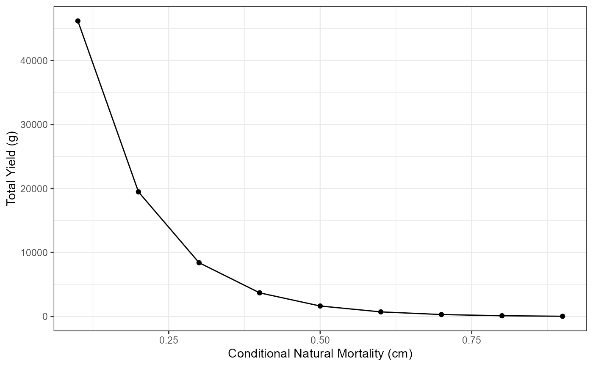
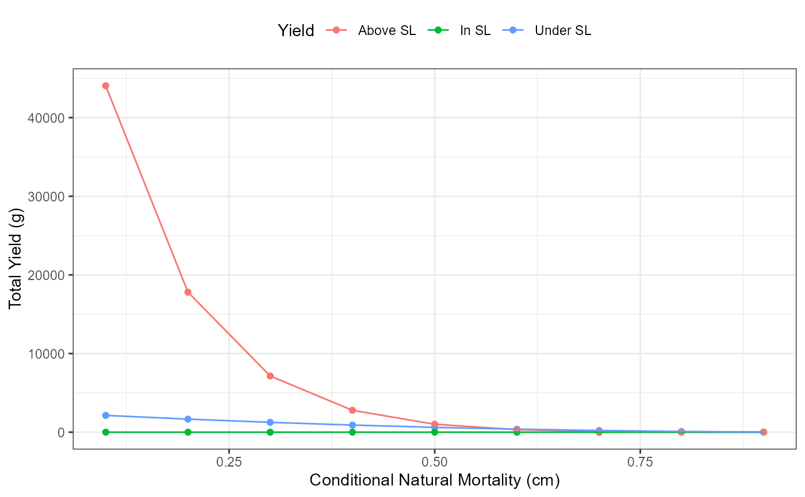

Main function to simulate expected yield using the Beverton-Holt Yield Per Recruit model for a slot limit
Source:R/yprBH_SlotLL.R
yprBH_SlotLL.R.RdMain wrapper function to estimate yield using the Beverton-Holt YPR model. This main function accepts a range of values for cf, cm, recruitment length, lower slot limit length, and upper slot limit length.
Usage
yprBH_SlotLL(
recruitmentTL = NULL,
lowerSL,
upperSL,
cfunder,
cfin,
cfabove,
cm,
loi = NULL,
lhparms,
matchRicker = FALSE
)Arguments
- recruitmentTL
A numeric representing the minimum length limit for recruiting to the fishery in mm.
- lowerSL
A numeric representing the length of the lower slot limit in mm.
- upperSL
A numeric representing the length of the upper slot limit in mm.
- cfunder
Single value, conditional fishing mortality under the lower slot limit.
- cfin
Single value, conditional fishing mortality within the lower and upper slot limit.
- cfabove
Single value, conditional fishing mortality over the upper slot limit.
- cm
A numeric vector of conditional natural mortality.
- loi
A numeric vector for lengths of interest. Used to determine number of fish that reach desired lengths.
- lhparms
A named vector or list that contains values for each
N0,tmax,Linf,K,t0,LWalpha, andLWbeta. SeemakeLHfor definitions of these life history parameters. Also see details.- matchRicker
A logical that indicates whether the yield function should match that in Ricker (). Defaults to
TRUE. The only reason to changed toFALSEis to try to match output from FAMS. See the "YPR_FAMSvRICKER" article.
Value
A data.frame with the following calculated values:
yieldTotal is the calculated total yield
yieldUnder is the calculated yield under the slot limit
yieldIn is the calculated yield within the slot limit
yieldAbove is the calculated yield above the slot limit
nharvTotal is the calculated total number of harvested fish
ndieTotal is the calculated total number of fish that die of natural death
nharvestUnder is the number of harvested fish under the slot limit
nharvestIn is the number of harvested fish within the slot limit
nharvestAbove is the number of harvested fish above the slot limit
n0die is the number of fish that die of natural death before entering the fishery at a minimum length
ndieUnder is the number of fish that die of natural death between entering the fishery and the lower slot limit
ndieIn is the number of fish that die of natural deaths within the slot limit
ndieAbove is the number of fish that die of natural deaths above the slot limit
nrUnder is the number of fish at time trUnder (time they become harvestable size under the slot limit)
nrIn is the number of fish at time trIn (time they reach the lower slot limit size)
nrAbove is the number of fish at time trAbove (time they reach the upper slot limit size)
trUnder is the time for a fish to recruit to a minimum length limit (i.e., time to enter fishery)
trIn is the time for a fish to recruit to a lower length limit of the slot limit
trOver is the time for a fish to recruit to a upper length limit of the slot limit
avglenUnder is the average length of fish harvested under the slot limit
avglenIn is the average length of fish harvested within the slot limit
avglenAbove is the average length of fish harvested above the slot limit
avgwtUnder is the average weight of fish harvested under the slot limit
avgwtIn is the average weight of fish harvested within the slot limit
avgwtAbove is the average weight of fish harvested above the slot limit
nAtxxxis the number that reach the length of interest supplied. There will be one column for each length of interest.cm A numeric representing conditional natural mortality
expUnder is the exploitation rate under the slot limit
expIn is the exploitation rate within the slot limit
expAbove is the exploitation rate above the slot limit
FUnder is the estimated instantaneous rate of fishing mortality under the slot limit
FIn is the estimated instantaneous rate of fishing mortality within the slot limit
FAbove is the estimated instantaneous rate of fishing mortality above the slot limit
MUnder is the estimated instantaneous rate of natural mortality under the slot limit
MIn is the estimated instantaneous rate of natural mortality within the slot limit
MAbove is the estimated instantaneous rate of natural mortality above the slot limit
ZUnder is the estimated instantaneous rate of total mortality under the slot limit
ZIn is the estimated instantaneous rate of total mortality within the slot limit
ZAbove is the estimated instantaneous rate of total mortality above the slot limit
SUnder is the estimated total survival under the slot limit
SIn is the estimated total survival within the slot limit
SAbove is the estimated total survival above the slot limit
cfUnder A numeric representing conditional fishing mortality
cfIn A numeric representing conditional fishing mortality
cfOver A numeric representing conditional fishing mortality
recruitmentTL A numeric representing the minimum length limit for recruiting to the fishery in mm.
lowerSL A numeric representing the length of the lower slot limit in mm.
upperSL A numeric representing the length of the upper slot limit in mm.
N0 A numeric representing the initial number of new recruits entering the fishery OR a vector or list that contains named values for each
N0,Linf,K,t0,LWalpha,LWbeta, andtmaxLinf A numeric representing the point estimate of the asymptotic mean length (L-infinity) from the von Bertalanffy growth model in mm
K A numeric representing the point estimate of the Brody growth coefficient from the von Bertalanffy growth model
t0 A numeric representing the point estimate of the x-intercept (i.e., theoretical age at a mean length of 0) from the von Bertalanffy growth model
LWalpha A numeric representing the point estimate of alpha from the length-weight regression on the log10 scale.
LWbeta A numeric representing the point estimate of beta from the length-weight regression on the log10 scale.
tmax An integer representing maximum age in the population in years
See also
this demonstration page for more plotting examples
#'See this demonstration page for more plotting examples
Author
Jason C. Doll, jason.doll@fmarion.edu
Examples
#Load other required packages for organizing output and plotting
library(ggplot2) #for plotting
library(dplyr) #for select
library(tidyr) #for pivot_longer
# Life history parameters to be used below
LH <- makeLH(N0=100,tmax=15,Linf=592,K=0.20,t0=-0.3,LWalpha=-5.528,LWbeta=3.273)
# conditional natural mortality vector
cm <- seq(from = 0.1, to = 0.9, by = 0.1)
# length of interest vector
loi <- c(200,250,300,325,350)
#Estimate yield based on a protected slot limit
Res_1 <- yprBH_SlotLL(recruitmentTL=200,lowerSL=250,upperSL=325,
cfunder=0.25,cfin=0.0,cfabove=0.15,cm=cm,
loi=c(200,250,300,325,350),lhparms=LH)
Res_1
#> yieldTotal yieldUnder yieldIn yieldAbove nharvTotal ndieTotal
#> 1 46197.75428 2134.02263 0 44063.731657 46.4972295 33.877878
#> 2 19470.46525 1661.31736 0 17809.147884 26.2230471 40.820004
#> 3 8398.37800 1251.53890 0 7146.839100 15.3741194 37.919849
#> 4 3685.37197 903.25539 0 2782.116585 9.1781028 31.485803
#> 5 1625.61154 614.90035 0 1010.711189 5.4378755 24.061504
#> 6 707.41176 384.73474 0 322.677013 3.0898650 16.823205
#> 7 292.44938 210.78782 0 81.661558 1.5937619 10.403811
#> 8 103.91797 90.75603 0 13.161937 0.6667805 5.207535
#> 9 22.48605 21.80087 0 0.685181 0.1607166 1.572193
#> nharvestUnder nharvestIn nharvestAbove n0die ndieUnder ndieIn
#> 1 14.3001921 0 32.197037424 16.93639 5.237294 7.7673445
#> 2 11.1865599 0 15.036487211 32.49751 8.676970 11.4974691
#> 3 8.4736976 0 6.900421751 46.64404 10.505888 12.2698331
#> 4 6.1545044 0 3.023598400 59.32995 10.928309 11.0537921
#> 5 4.2212588 0 1.216616732 70.50022 10.170789 8.7018157
#> 6 2.6654563 0 0.424408716 80.08692 8.489694 5.9406702
#> 7 1.4775667 0 0.116195279 88.00243 6.183736 3.3592771
#> 8 0.6466386 0 0.020141855 94.12568 3.617621 1.3904478
#> 9 0.1595880 0 0.001128596 98.26709 1.277330 0.2788736
#> ndieAbove nrUnder nrIn nrAbove trUnder trIn trOver
#> 1 20.87323905 83.063612 63.5261255 55.75878105 1.761224 2.443479 3.68129
#> 2 20.64556520 67.502485 47.6389553 36.14148621 1.761224 2.443479 3.68129
#> 3 15.14412843 53.355962 34.3763764 22.10654334 1.761224 2.443479 3.68129
#> 4 9.50370239 40.670046 23.5872325 12.53344041 1.761224 2.443479 3.68129
#> 5 5.18889991 29.499778 15.1077308 6.40591513 1.761224 2.443479 3.68129
#> 6 2.39283987 19.913084 8.7579328 2.81726260 1.761224 2.443479 3.68129
#> 7 0.86079792 11.997573 4.3362705 0.97699339 1.761224 2.443479 3.68129
#> 8 0.19946640 5.874316 1.6100560 0.21960825 1.761224 2.443479 3.68129
#> 9 0.01599007 1.732910 0.2959923 0.01711867 1.761224 2.443479 3.68129
#> avglenUnder avglenIn avglenAbove avgwtUnder avgwtIn avgwtAbove nAt200
#> 1 225.5013 0 443.8067 149.2303 0 1368.5648 83.063612
#> 2 225.1683 0 424.6353 148.5101 0 1184.3955 67.502485
#> 3 224.7908 0 407.5833 147.6969 0 1035.7105 53.355962
#> 4 224.3558 0 393.1118 146.7633 0 920.1343 40.670046
#> 5 223.8426 0 381.0284 145.6675 0 830.7556 29.499778
#> 6 223.2179 0 370.8494 144.3410 0 760.2978 19.913084
#> 7 222.4198 0 362.0448 142.6588 0 702.7958 11.997573
#> 8 221.3140 0 354.0829 140.3505 0 653.4620 5.874316
#> 9 219.4936 0 346.2120 136.6072 0 607.1089 1.732910
#> nAt250 nAt300 nAt325 nAt350 cm expUnder expIn expAbove
#> 1 63.5261255 58.45086262 55.75878105 48.8794721 0.1 0.2378792 0 0.14257140
#> 2 47.6389553 39.93702691 36.14148621 29.9002613 0.2 0.2252683 0 0.13484863
#> 3 34.3763764 25.93244414 22.10654334 17.1270909 0.3 0.2120703 0 0.12677377
#> 4 23.5872325 15.75263905 12.53344041 9.0017108 0.4 0.1981511 0 0.11826676
#> 5 15.1077308 8.73574294 6.40591513 4.2064335 0.5 0.1833156 0 0.10921127
#> 6 8.7579328 4.24537168 2.81726260 1.6577675 0.6 0.1672608 0 0.09942671
#> 7 4.3362705 1.67453146 0.97699339 0.4990840 0.7 0.1494673 0 0.08860398
#> 8 1.6100560 0.45129000 0.21960825 0.0919120 0.8 0.1288953 0 0.07612528
#> 9 0.2959923 0.04797287 0.01711867 0.0050959 0.9 0.1027330 0 0.06032395
#> FUnder FIn FAbove MUnder MIn MAbove ZUnder ZIn
#> 1 0.2876821 0 0.1625189 0.1053605 0.1053605 0.1053605 0.3930426 0.1053605
#> 2 0.2876821 0 0.1625189 0.2231436 0.2231436 0.2231436 0.5108256 0.2231436
#> 3 0.2876821 0 0.1625189 0.3566749 0.3566749 0.3566749 0.6443570 0.3566749
#> 4 0.2876821 0 0.1625189 0.5108256 0.5108256 0.5108256 0.7985077 0.5108256
#> 5 0.2876821 0 0.1625189 0.6931472 0.6931472 0.6931472 0.9808293 0.6931472
#> 6 0.2876821 0 0.1625189 0.9162907 0.9162907 0.9162907 1.2039728 0.9162907
#> 7 0.2876821 0 0.1625189 1.2039728 1.2039728 1.2039728 1.4916549 1.2039728
#> 8 0.2876821 0 0.1625189 1.6094379 1.6094379 1.6094379 1.8971200 1.6094379
#> 9 0.2876821 0 0.1625189 2.3025851 2.3025851 2.3025851 2.5902672 2.3025851
#> ZAbove SUnder SIn SAbove cfUnder cfIn cfOver recruitmentTL lowerSL upperSL
#> 1 0.2678794 0.675 0.9 0.765 0.25 0 0.15 200 250 325
#> 2 0.3856625 0.600 0.8 0.680 0.25 0 0.15 200 250 325
#> 3 0.5191939 0.525 0.7 0.595 0.25 0 0.15 200 250 325
#> 4 0.6733446 0.450 0.6 0.510 0.25 0 0.15 200 250 325
#> 5 0.8556661 0.375 0.5 0.425 0.25 0 0.15 200 250 325
#> 6 1.0788097 0.300 0.4 0.340 0.25 0 0.15 200 250 325
#> 7 1.3664917 0.225 0.3 0.255 0.25 0 0.15 200 250 325
#> 8 1.7719568 0.150 0.2 0.170 0.25 0 0.15 200 250 325
#> 9 2.4651040 0.075 0.1 0.085 0.25 0 0.15 200 250 325
#> N0 Linf K t0 LWalpha LWbeta tmax
#> 1 100 592 0.2 -0.3 -5.528 3.273 15
#> 2 100 592 0.2 -0.3 -5.528 3.273 15
#> 3 100 592 0.2 -0.3 -5.528 3.273 15
#> 4 100 592 0.2 -0.3 -5.528 3.273 15
#> 5 100 592 0.2 -0.3 -5.528 3.273 15
#> 6 100 592 0.2 -0.3 -5.528 3.273 15
#> 7 100 592 0.2 -0.3 -5.528 3.273 15
#> 8 100 592 0.2 -0.3 -5.528 3.273 15
#> 9 100 592 0.2 -0.3 -5.528 3.273 15
# Plot results
# Total Yield vs Conditional Natural Mortality (cm)
ggplot(data=Res_1,mapping=aes(x=cm,y=yieldTotal)) +
geom_point() +
geom_line() +
labs(y="Total Yield (g)",x="Conditional Natural Mortality (cm)") +
theme_bw()

# Yield under, in, and above the slot limit vs Conditional Natural Mortality (cm)
# Select columns for plotting
plot_data <- Res_1 |>
select(cm, yieldUnder, yieldIn, yieldAbove) |>
pivot_longer(!cm, names_to="YieldCat",values_to="Yield")
# Generate plot
ggplot(data=plot_data,mapping=aes(x=cm,y=Yield,group=YieldCat,color=YieldCat)) +
geom_point() +
scale_color_discrete(name="Yield",labels=c("Above SL","In SL","Under SL"))+
geom_line() +
labs(y="Total Yield (g)",x="Conditional Natural Mortality (cm)") +
theme_bw() +
theme(legend.position = "top")+
guides(color=guide_legend(title="Yield"))
